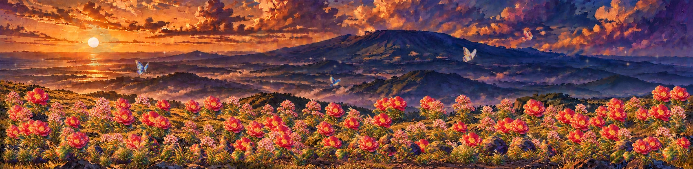

MAZELAND JEJU · SHARED LIBRARY
2026.10.22 · v44제주의 빛을 담은 정원,
모든 소스를 한곳에서.
2026.10.26 · 최신 판타지 배경·공중 파티클 정원 · 메인 보기 · 이전 버전은 올드
현재 추상 유화 이미지와 투명 PNG를 모았습니다. 사용할 배경을 고르면 같은 빛을 가진 꽃과 자연물을 함께 찾을 수 있습니다.
어떤 배경에 사용할까요?
이전 버전은 올드에서 확인하세요.
기존 개화 영상, 루프, 이미지와 제작·검수 기록을 모았습니다.
올드 열기 →